Pasos para ingresar a Microsoft Teams Tutorial 1
Ingresar a la página Inicio de Sesión Microsoft Teams
Ingresar el correo electrónico adjunto al correo electrónico.
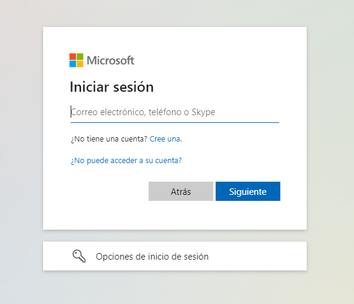Deberá ingresar la contraseña también adjunta al correo electrónico.
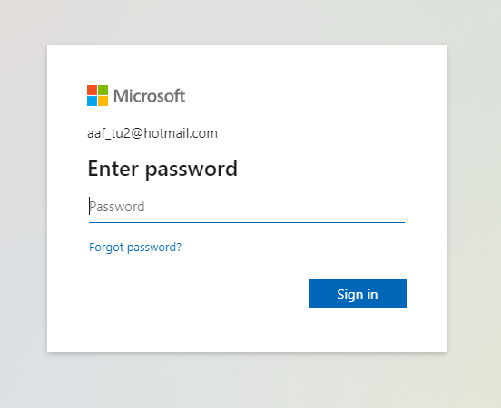Aquí solo le podemos dar en ok si queremos permanecer en sesión.
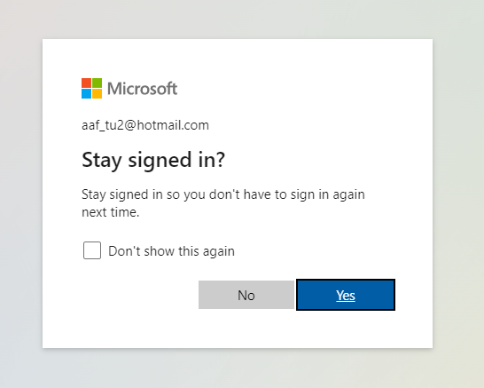Luego nos preguntará si queremos utilizar la versión web o de escritorio, podemos usar cualquiera de las dos (la versión web puede ser mas cómoda para principiantes).
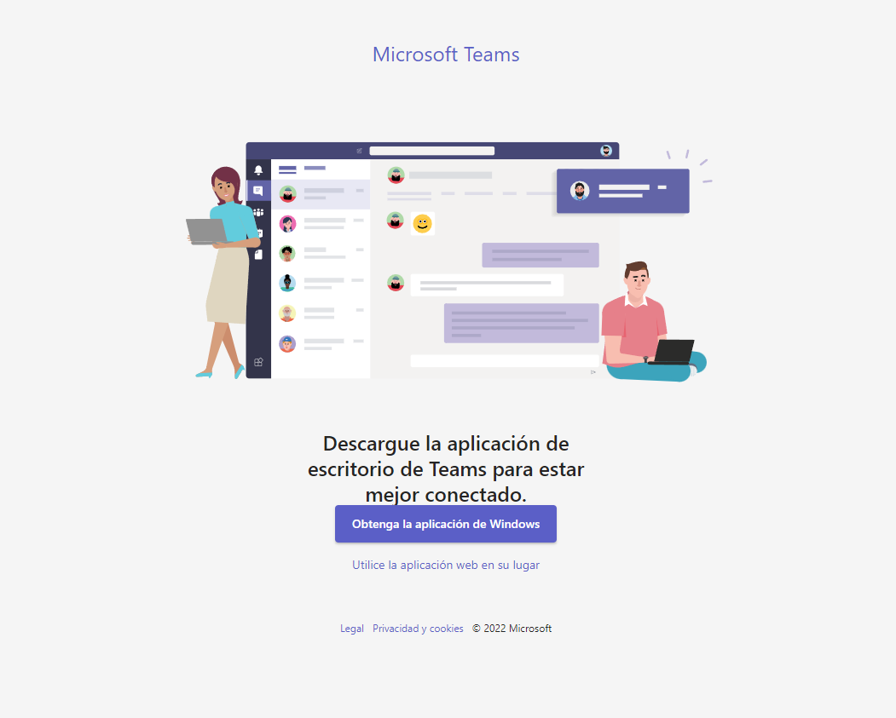Posteriormente deberemos elegir el modo en el que iniciaremos sesión, en este caso vamos a iniciar como UNIVERSIDAD AUTONOMA DE SINALOA (Invitado), ya seleccionado le damos continuar.
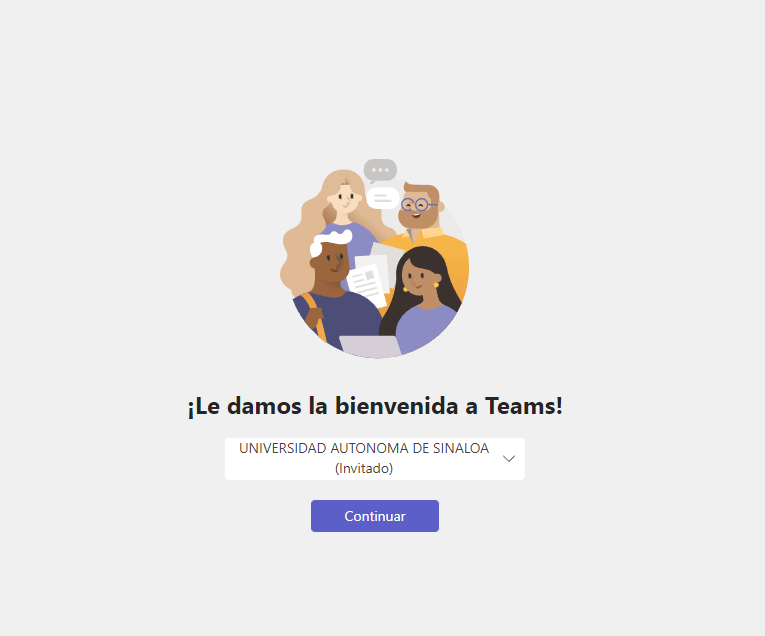Una vez hayamos hecho todo lo anterior ya podremos ver la interfaz de Microsoft Teams, para poder mandar el mensaje no dirigimos al menú izquierdo y seleccionamos "Equipos" posteriormente ubicamos la materia "Tecnologías Emergentes para el Aprendizaje" y seleccionamos "General", y final mente en la parte izquierda y abajo veremos el botón "Nueva conversación" lo seleccionamos y ya podremos mandar el mensaje "¡Ya soy parte del Equipo!".

Pasos para ingresar a Microsoft Teams con Authenticator Tutorial 2
Ingresar a la página Inicio de Sesión Microsoft Teams
Ingresar el correo electrónico adjunto al correo electrónico.
Deberá ingresar la contraseña también adjunta al correo electrónico.
Aquí tendremos que colocar la contraseña adjunta al correo y colocar una nueva contraseña. (Establezca una contraseña que pueda recordar o guárdela para evitar problemas posteriores).
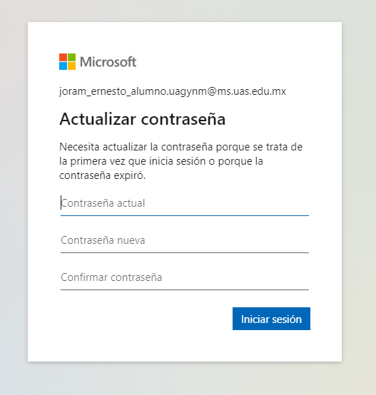Solo seleccionamos "Siguiente".
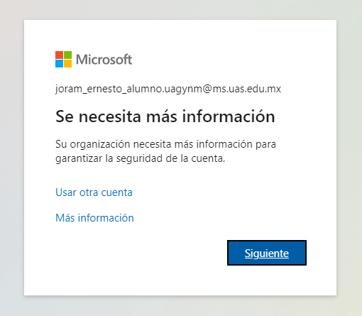Para poder Iniciar sesión necesitamos autenticarnos con la aplicación de Microsoft Authenticator seleccionamos "Siguiente".
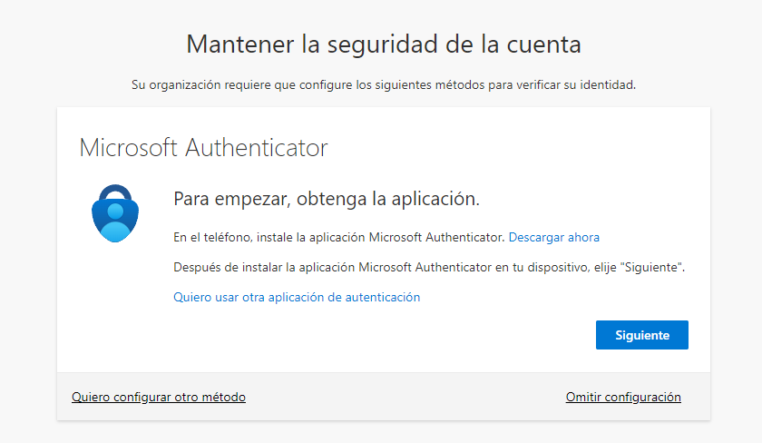Seleccionamos "Siguiente" de nuevo.
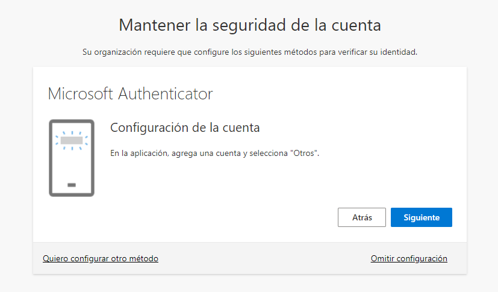Esperaremos aquí y continuamos en el paso número 9.
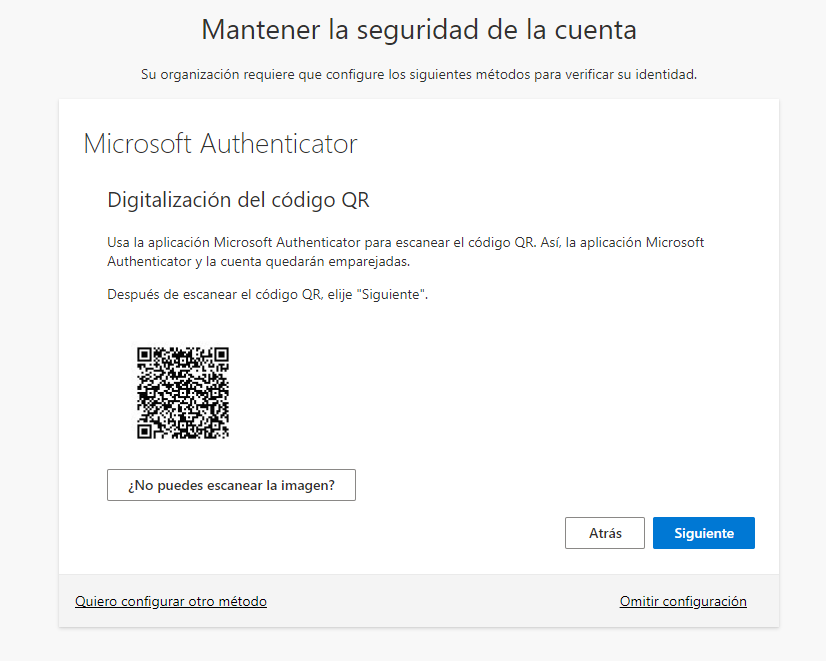Antes de continuar necesitaremos descargar la aplicación desde la Playstore o Appstore.
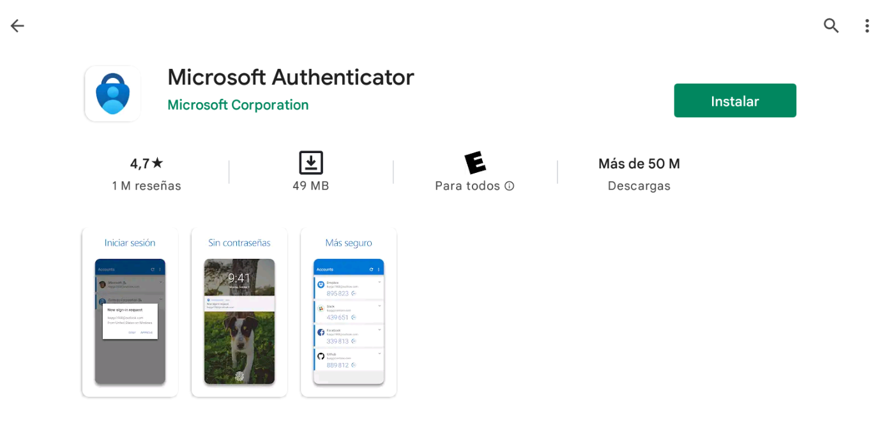Abrimos la aplicación, si vemos el siguiente mensaje le damos en "Aceptar".
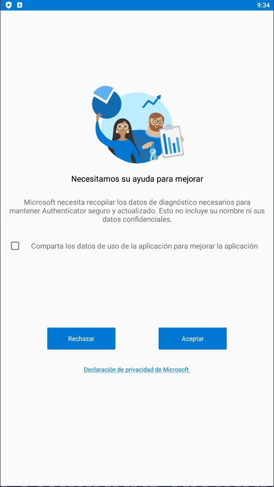En esta pantalla vamos a seleccionar la opción de "Escanear un código QR".
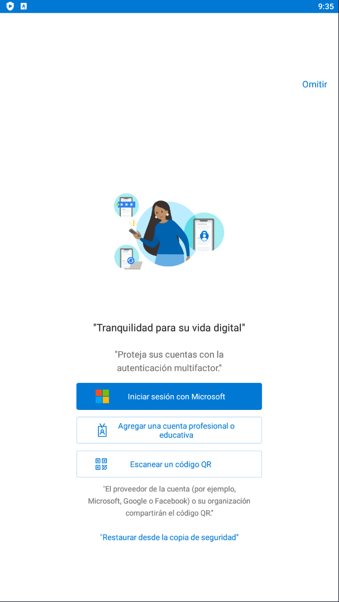Posteriormente nos abrirá la cámara y aquí escaneamos el código QR que está en la página del paso número 8
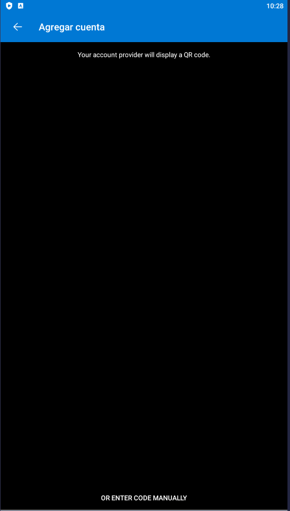Nos pedirá un código de seis dígitos el cual podremos obtenerlo desde la app móvil.
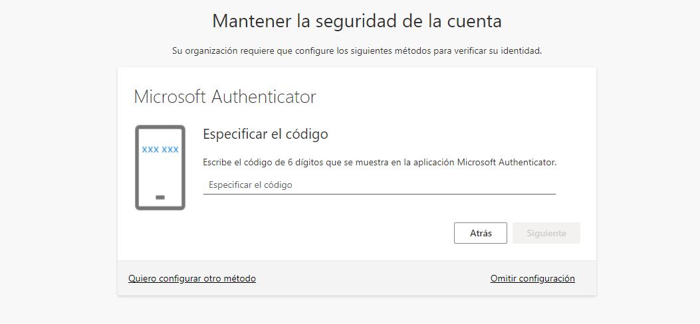Seleccionamos el usuario que nos cargó después de escanear el QR y posteriormente veremos el código de seis dígitos que debemos ingresar
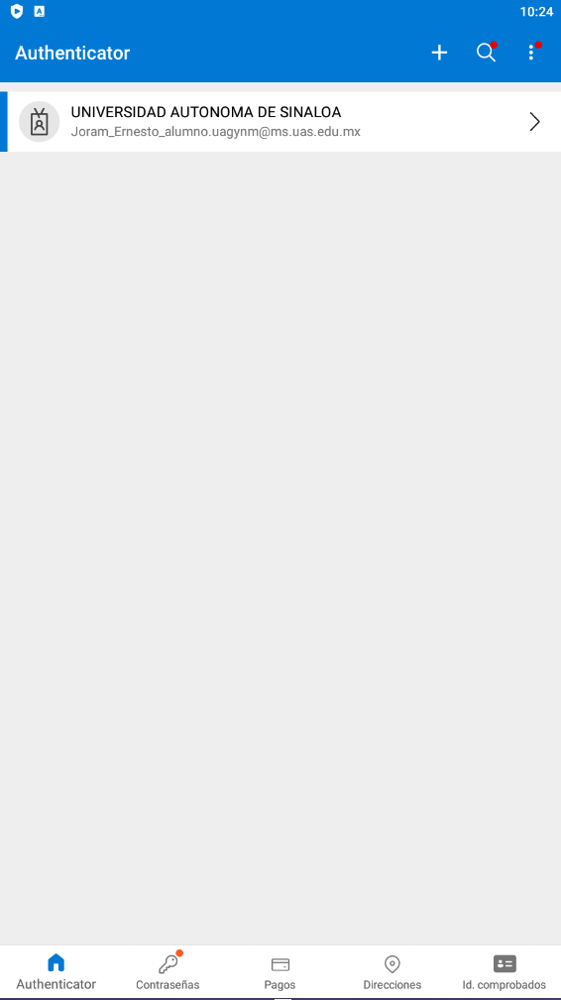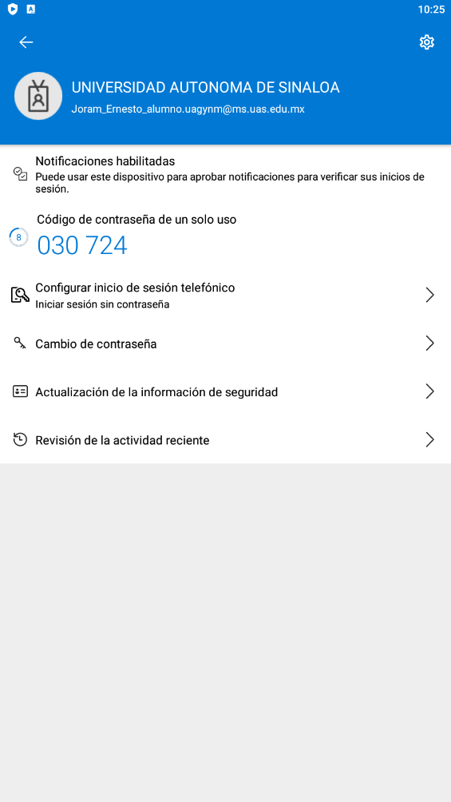Si todo salió correctamente nos mostrara la siguiente leyenda y solo tendremos que seleccionar "Listo".
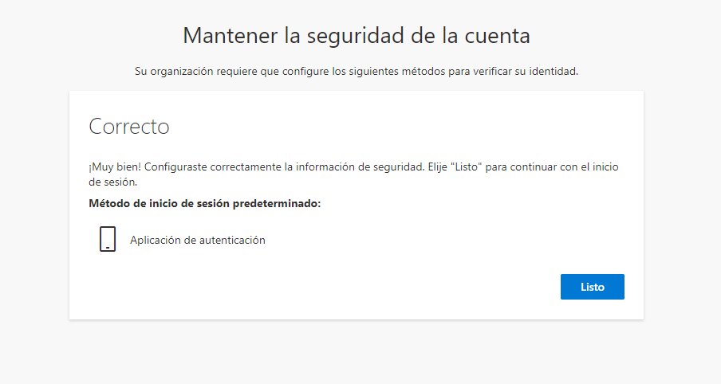Nos preguntará si queremos utilizar la versión web o de escritorio, podemos usar cualquiera de las dos (la versión web puede ser más cómoda para principiantes).
Posteriormente deberemos elegir el modo en el que iniciaremos sesión, en este caso vamos a iniciar como UNIVERSIDAD AUTONOMA DE SINALOA (Invitado), ya seleccionado le damos continuar.
Una vez hayamos hecho todo lo anterior ya podremos ver la interfaz de Microsoft Teams, para poder mandar el mensaje no dirigimos al menú izquierdo y seleccionamos "Equipos" posteriormente ubicamos la materia "Tecnologías Emergentes para el Aprendizaje" y seleccionamos "General", y final mente en la parte izquierda y abajo veremos el botón "Nueva conversación" lo seleccionamos y ya podremos mandar el mensaje "¡Ya soy parte del Equipo!".